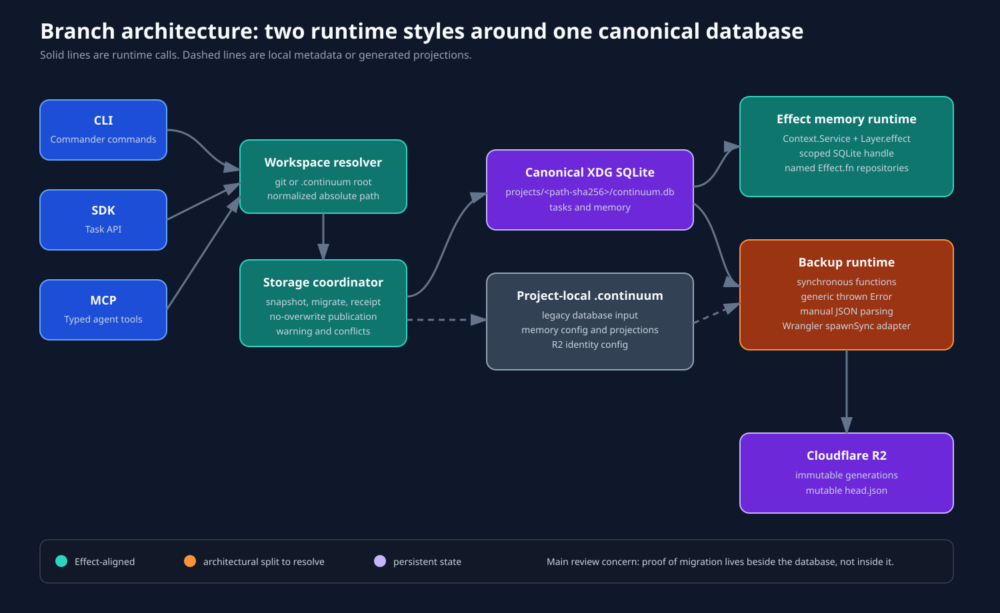
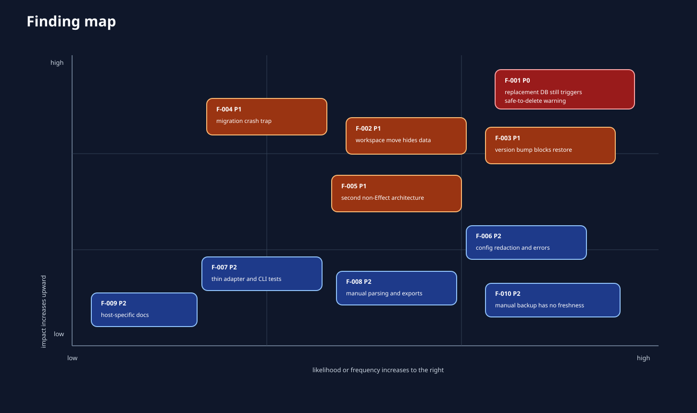
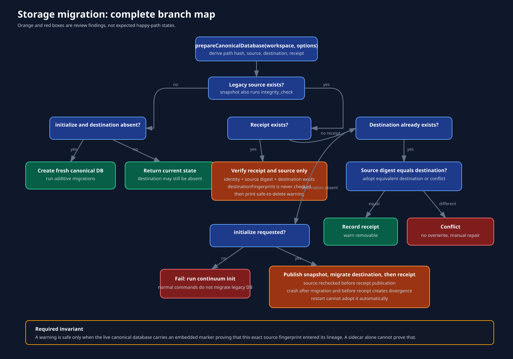
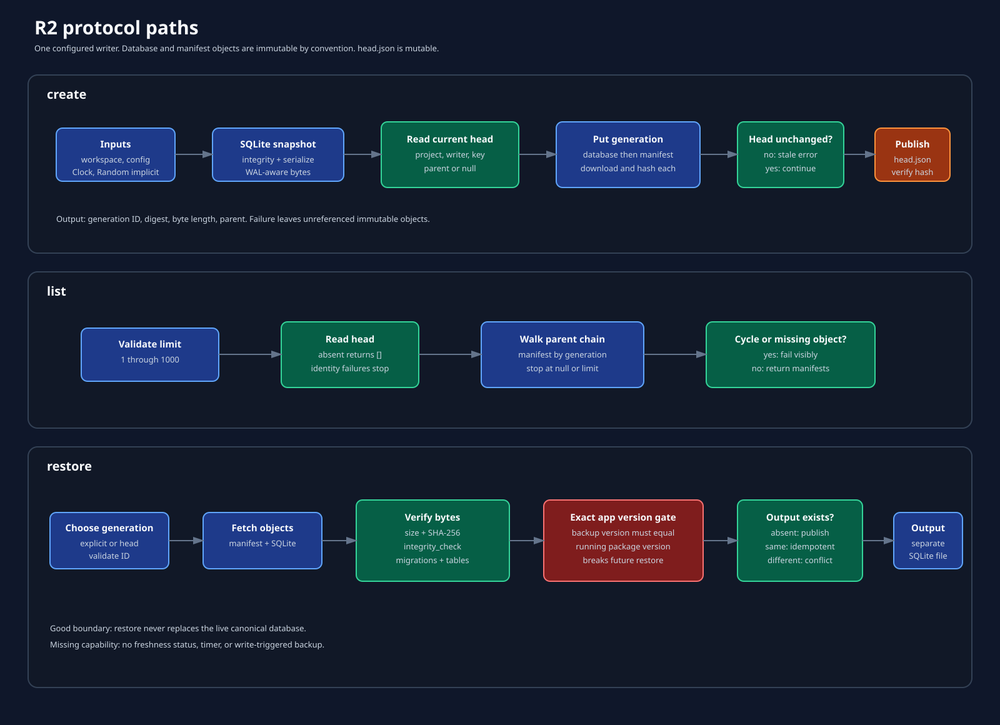
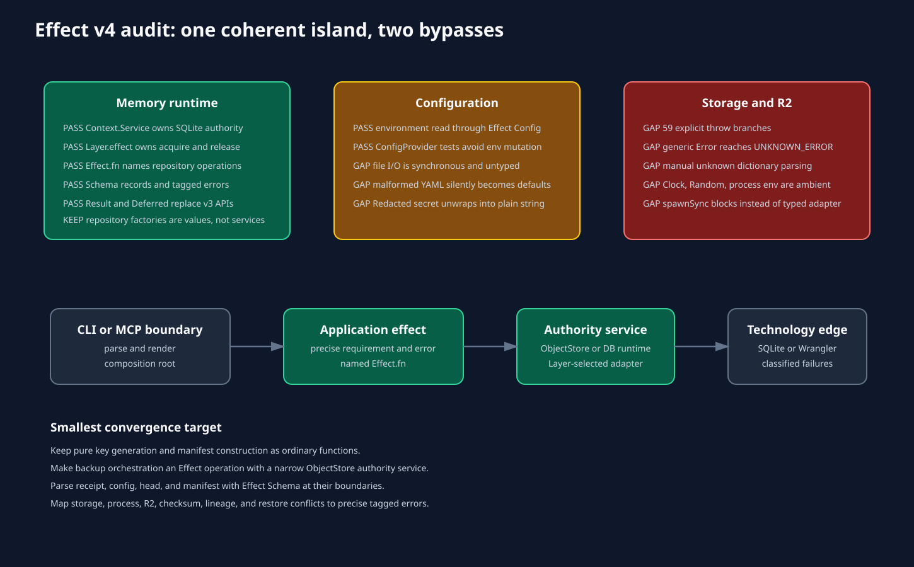
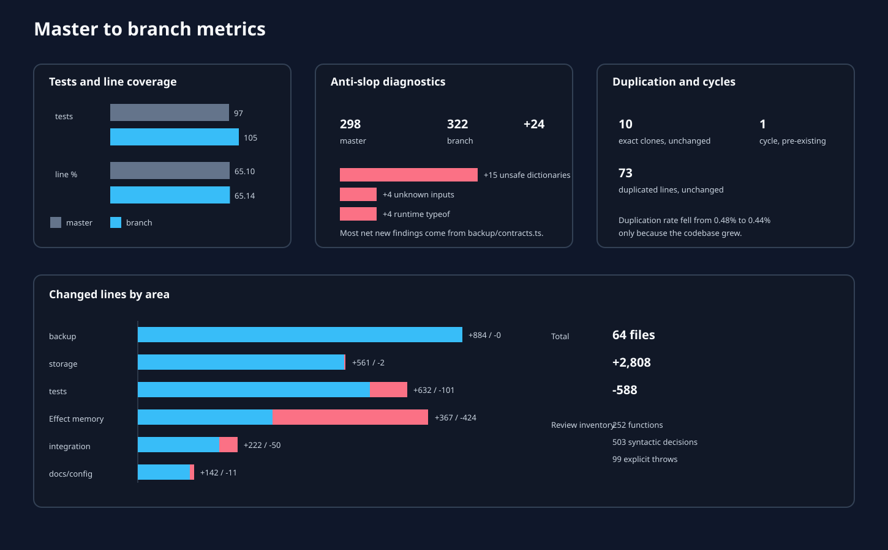

F-001 P0
A valid replacement canonical DB still triggers the legacy removal warning.
master...feature/xdg-storage-migration
A replacement canonical database can still produce the safe-to-delete warning. Three more migration and restore defects should also be fixed before merge.

A valid replacement canonical DB still triggers the legacy removal warning.
Moving a workspace silently selects a new empty path-hash database.
Any application version bump makes existing backups unrestorable.
A crash before receipt publication strands a valid migrated destination.
Storage and backup bypass the new Effect error and service architecture.




